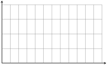
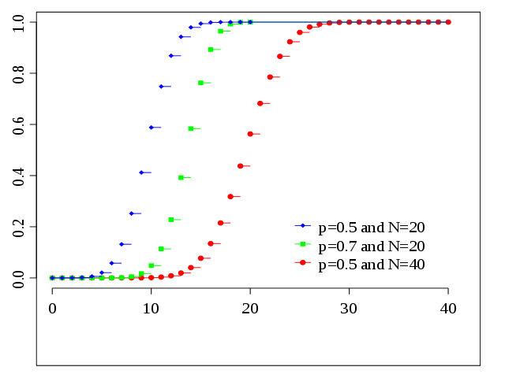
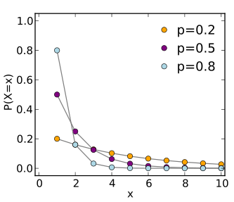
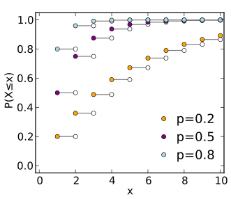
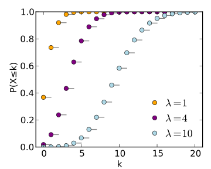

Section 3.1 Discrete Random Variables
Section 3.1.1 Discrete Random Variables
In an experiment \(X\text{,}\) we pick an element from our finite sample space \(\Omega\) and then make note of one of its numerical properties. For example, we could take \(\Omega\) to be the set of vertices in our graph, and let \(X\) be the degree of the chosen vertex.
A discrete random variable \(X: \Omega \rightarrow \R\) is a real-valued function on the outcome of an experiment that can take finite or a countably infinite number of values. In other words, the image \(T \subset \R\) is a finite or countably infinite set. Most typically, our discrete random variables will only take on nonnegative integer values, so \(T = \Z_{\geq 0}\) or \(T = \{ 0, 1, 2, \ldots, M \}\text{.}\)
So at the end of it all, \(X\) is just a function from a set \(\Omega\) to \(\R\text{.}\) So what's with all the strange notation? Let's start with the sample space \(\Omega\text{.}\) This is just a set. Why not call it \(S\text{?}\) We use \(\Omega\) as a mnemonic for "outcome." Since we are running an experiment (multiple times), each trial produces an outcome. We then take a measurement of that outcome (represented by the random variable \(X\)).
Now, the random variable \(X\) is actually a real-valued function \(X: \Omega \rightarrow \R\text{.}\) So why use \(X\) instead of \(f\text{?}\) Well, we are taking a measurement of an outcome of an experiment. In this context, we are more interested in the value of the measurement. The symbol \(X\) encourages us to pay attention to the measurement (not the function) because it reminds us of the variable \(x\) from algebra.
Subsection 3.1.1.1 Probability Mass Function
A discrete random variable \(X\) has an associated probability mass function (PMF)
which gives the probability of each numerical value that the random variable can take. When \(X\) is clear from the context, we simply write \(p(t) = \P [X=t]\text{.}\)
Example 3.1.1. PMF for a Random Vertex Degree.
Consider the experiment where we take \(X\) to be the degree of a vertex from the network shown below, chosen uniformly at random (meaning that every vertex is equally likely). Find the PMF for this experiment.
Here are the probabilities of picking a vertex of degree \(0 \leq t \leq 6\text{:}\)
For example, there are two vertices with degree four: vertex 6 and vertex 7.
Subsection 3.1.1.2 Properties of a PMF
The PMF of a random variable has the following properties.
-
We always have
\begin{equation*} \sum_{t \in T} \P[ X = t] = 1. \end{equation*} -
When \(\Omega\) is a finite set, we can find \(\P[X = t]\) by calculating
\begin{equation*} p(t) = \P[X=t] = \frac{ | \{ \omega \in \Omega | X(\omega) = t \} |} { | \Omega |}. \end{equation*} -
A function \(f: T \rightarrow \R\) is a PMF if and only if
\(f(t) \geq 0\) for all \(t \in T\text{,}\) and
\(\sum_{t \in T} f(t) = 1\text{.}\)
Section 3.1.2 Events
A subset \(A \subset \Omega\) of the sample space is called an event. The probability of event \(A\) is
The subset \(A\) is called an "event" because we often give a description of the elements in \(A\) using some shared property, rather than directly listing the elements.
Example 3.1.1. Probability of Events.
Suppose that we pick a random vertex from our example network.
Let \(A\) be the event that the degree of the vertex is even. Let \(B\) be the event that the degree of the vertex is at least 3.List the elements of \(A\text{,}\) \(B\text{,}\) \(A \cap B\) and \(A \cup B\text{.}\)
Next, calculate \(\P[A]\text{,}\) \(\P[B]\text{,}\) \(\P[A \cap B]\) and \(\P[A \cup B]\text{.}\)
Example 3.1.2. Union of Events.
For any sample space \(\Omega\) and any events \(A\) and \(B\text{,}\) explain why
This follows from the inclusion-exclusion formula
Subsection 3.1.2.1 Conditional Probability
Given two events \(A, B \subset \Omega\text{,}\) the conditional probability of \(A\) given \(B\) is
This is the probability of event \(A\text{,}\) given that event \(B\) is true.
Example 3.1.3. Conditional Probabillity.
Pick a random vertex from our example network. Let's use the same events from the first example in this subsection:
Let \(A\) be the event that the degree of the vertex is even.
Let \(B\) be the event that the degree of the vertex is at least 3.
Calculate \(\P[A \mid B]\) and \(\P[B \mid A]\text{.}\)
Solution.Subsection 3.1.2.2 Independent Events and Dependent Events
Two events \(A,B \in \Omega\) are independent when
Otherwise, these events are dependent.
Example 3.1.4. Probability of Independent Events.
Show that when \(A\) and \(B\) are independent, we have
In other words, assuming that event \(B\) holds has no effect on the probability that event \(A\) holds. Solution.
Example 3.1.5. Example of Independent Events.
Show that the events \(A\) and \(B\) from the network example problems above are dependent. Solution.
We have
Since \(\P[A \mid B] \neq \P[A]\text{,}\) these are dependent events.
Section 3.1.3 CDF and CCDF
Subsection 3.1.3.1 Cumulative Density Function
The cumulative distribution function (CDF) \(F_X: \R \rightarrow [0,1]\) of a discrete random variable \(X\) is given by
So the CDF \(F_X(t)\) captures the probability that the value of \(X\) is at most \(t\text{,}\) while the PMF \(p_X(t)\) captures the probability that the value of \(X\) is exactly \(t\text{.}\)
Example 3.1.1. CDF for a Random Vertex Degree.
Find the CDF for the random variable \(X\text{,}\) the degree of a randomly chosen vertex of our example network.
Solution.For example, among the 7 vertices, there are 5 vertices with degree at most 3,
The CDF \(F_X\) of a discrete random variable satisfies the following properties:
-
\(F_X\) is weakly increasing (aka monotonically nondecreasing). That is,
\begin{equation*} s \leq t \qquad \Longrightarrow \qquad F_X(s) \leq F_X(t). \end{equation*} \(F_X(t)\) tends to 0 as \(t \rightarrow - \infty\) , and tends to 1 as \(t \rightarrow \infty\text{.}\)
Since \(X\) is a discrete random variable, the CDF \(F_X(t)\) is a piecewise constant function of \(t\text{.}\)
Example 3.1.2. Connecting the PMF with the CDF.
Suppose that \(X\) takes on discrete integer values. Explain why for any \(k \in \Z\text{,}\)
and
In other words, if you know the PMF, then you can find the CDF, and vice versa. Solution.
We have
because this is the definition of the CDF. Therefore, we have
Subsection 3.1.3.2 Complementary Cumulative Density Function
The complementary cumulative distribution function (CCDF) \(F_X: \R \rightarrow [0,1]\) of a discrete random variable \(X\) is given by
So the CCDF \(\overline{F}_X(t)\) captures the probability that the value of \(X\) is greater than \(t\text{.}\)
Example 3.1.3. CCDF for Random Vertex Degree.
Find the CCDF for the random variable \(X\) where, as above, the value of \(X\) is the degree of a randomly chosen vertex of our example network.
Solution.Example 3.1.4. Properties of a CCDF.
Using the fact that \(\overline{F}_X(t) = 1 - F_X(t)\text{,}\) write down the properties of a CCDF that are analogous to the CDF properties listed above. Solution.
The CCDF \(\overline{F}_X\) of a discrete random variable satisfies the following properties:
-
\(\overline{F}_X\) is weakly decreasing (aka monotonically nonincreasing). That is,
\begin{equation*} s \leq t \qquad \Longrightarrow \qquad \overline{F}_X(s) \geq \overline{F}_X(t). \end{equation*} \(\overline{F}_X(t)\) tends to 1 as \(t \rightarrow - \infty\) , and tends to 0 as \(t \rightarrow \infty\text{.}\)
Since \(X\) is a discrete random variable, the CCDF \(\overline{F}_X(t)\) is a piecewise constant function of \(t\text{.}\)
Example 3.1.5. Connecting the PMF and the CCDF.
Suppose that \(X\) takes on discrete integer values. Develop formulas for going back and forth between the PMF and the CCDF (analogous to how you connected the PMF and CDF above). Solution.
For any \(k \in \Z\text{,}\)
by the definition of a CCDF. We then have
In other words, if you know the PMF, then you can find the CCDF, and vice versa.
Subsection 3.1.3.3 Example: The Sum of Two Dice
Let's run an experiment where \(X\) is the outcome when we roll two fair 6-sided dice.
Example 3.1.6. Sum of Two Dice.
Find the values of PMF \(p(t) = p_X(t)\text{,}\) CDF \(F(t) = F_X(t)\) and CCDF \(\overline{F}(t) = \overline{F}_X(t)\text{.}\) Use the domain \(0 \leq t \leq 12\) for each. Solution.
Example 3.1.7. Sketching PMF, CDF, CCDF for Two Dice.
Sketch the graphs of the PMF, CDF and CCDF. Make any observations that you can about how these graphs are related.
PMF \(\qquad p(t)\)

CDF \(\qquad F(t) = \P(X \leq t) = \sum_{k \leq t} p(k).\)
CCDF \(\qquad \overline{F}(t) = \P(X > t) = \sum_{k > t} p(k) = 1 - F(t)\)
The following graphs are drawn to the same scale. The \(x\)-axis spans \([0,12]\) and the \(y\)-axis spans \([0,1]\text{.}\)
Section 3.1.4 Expectation, Variance and Moments
Subsection 3.1.4.1 Expected Value
The expected value of a discrete random variable is
which is equivalent to
Example 3.1.1. Expected Value for Vertex Degree.
Find \(\E[X]\) when \(X\) is the degree a randomly chosen vertex of our example network.
Solution.Example 3.1.2. Expected Value for Dice Roll.
Find \(\E[X]\) when \(X\) is the outcome when you roll two fair dice. Solution.
Let's use linearity of expectation (from the next exercise). Let \(Y\) be the outcome when we roll one fair die. We have
When we roll two dice, we have
where both \(Y_1\) and \(Y_2\) are the outcome of rolling one fair die.
Subsection 3.1.4.2 Linearity of Expectation
Example 3.1.3. Linearity of Expectation.
Prove that if \(X\) and \(Y\) are two random variables and \(a, b \in \R\text{,}\) then we have the following linearity of expectation formula:
We have
Subsection 3.1.4.3 Variance
The variance \(\var(X)\) is given by
The variance is a measure of dispersion of \(X\) around its expected value. It is always nonnegative.
Example 3.1.4. Formula for Variance.
Show that
Here is the argument. The notation is a little dense, so read it slowly. Each step has a simple explanation. For example,
because \(\E[X]\) is just a constant. (For the same reason, \(\E[13] = 13\) because the value doesn't change as we consider elements of the state space.)
where we have used linearity of expectation.
Example 3.1.5. Variance for a Random Vertex Degree.
Calculate the variance of our running example where \(X\) is the degree of a randomly chosen vertex from this network.
Solution.and
and therefore
Subsection 3.1.4.4 Standard Deviation
The standard deviation
has the same units as the random variable \(X\text{,}\) so it is easier to interpret than \(\var(X)\text{.}\) It can be shown that \(75\) percent of the sample space satisfies
This is why the standard deviation is a measure of the concentration around the expected value.
Subsection 3.1.4.5 The \(k\)th Moment
The \(k\)th moment of the random variable \(X\) is \(\)\E[X^k],\(\) the expected value of \(X^k\text{.}\) The \(k\)th central moment is
So the second central moment is the variance, \(\var(X)\text{.}\) The third central moment is the skewness, which measures the asymmetry of the PMF. The fourth central moment its the kurtosis, which measures the "peakness" of the PMF (tall and skinny versus short and squat). We will mostly be interested in variance and the second moment.
Section 3.1.5 Famous Discrete Distributions
Here are three discrete random variables that will be useful when we talk about random models for complex networks. You will prove the formulas and explore their properties in the exercises.
Subsection 3.1.5.1 Binomial Distribution
Flip a weighted coin \(n\) times, where \(p\) is the probability of obtaining heads, and \(1-p\) is the probability of obtaining tails. Define \(X\) to be the number of heads in the \(n\) tosses. This is the binomial random variable with parameters \(n\) and \(p\). The PMF is
The expectation is
The variance is
Here are the PMF and CDF of a binomial random variable.
 |
 |
|
| PMF | CDF |
Subsection 3.1.5.2 Geometric Distribution
Once again, we have a weighted coin where \(p\) is the probability of obtaining heads, and \(1-p\) is the probability of obtaining tails. Instead of flipping our coin for a fixed number of times, we will flip it until we first encounter a heads. This experiment gives the geometric random variable \(Y\text{.}\) . This is the geometric random variable for \(p\). The PMF is
The expectation is
The variance is
Here are the PMF and CDF of a geometric random variable
 |
 |
|
| PMF | CDF |
Subsection 3.1.5.3 Poisson Distribution
The Poisson random variable \(Z\) for parameter \(\lambda > 0\) has PMF given by
The expectation is
The variance is
Here are the PMF and CDF of a poisson random variable.
 |
 |
||
| PMF | CDF |